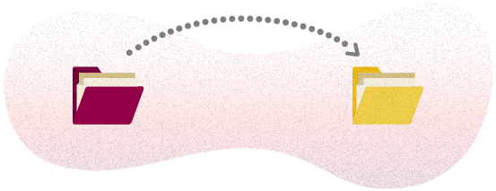

Plugin de accordion em jquery. Simples, leve e personalizável.
Lilo accordion é um plugin de jquery simples de ser implementado, e que não está atrelado a nenhum estilo predefinido, permitindo uma flexibilidade de personalização. O plugin contém as funcionalidades necessárias para os diversos comportamentos de um accordion.
Como usar?
01
Monte a estrutura

<div class="your-class">
<div class="lilo-accordion-control">Controle 1</div>
<div class="lilo-accordion-content">Conteúdo 1</div>
<div class="lilo-accordion-control">Controle 2</div>
<div class="lilo-accordion-content">Conteúdo 2</div>
<div class="lilo-accordion-control">Controle 3</div>
<div class="lilo-accordion-content">Conteúdo 3</div>
</div>
02
Mova o lilo para o projeto
Faça o download e mova a pasta dist com os arquivos .css e .js para o seu projeto

03
Linque a folha de estilo
Adicione o lilo-accordion.css dentro da tag <head>
<link rel="stylesheet" href="dist/css/lilo-accordion.min.css">
04
Adicione o script do plugin
Adicione o Jquery e depois o jquery.lilo.accordion.js antes da tag <body>
<script src="https://code.jquery.com/jquery-3.3.1.min.js" integrity="sha256-FgpCb/KJQlLNfOu91ta32o/NMZxltwRo8QtmkMRdAu8=" crossorigin="anonymous"></script>
<script src="dist/js/jquery.lilo.accordion.min.js"></script>
05
Inicialize o accordion
Inicialize o seu accordion em seu arquivo de scripts ou na sua tag de script inline
$(document).ready(function(){
$('.your-class').liloAccordion({
setting-name: setting-value
});
});
06
Conferindo o resultado
See the Pen Lilo Accordion by Alex Fabiano Ricioli (@alexfabianoricioli) on CodePen.
Este accordion está usando o Lilo :)